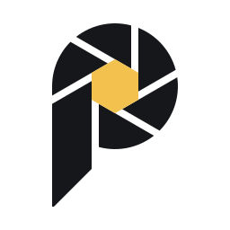
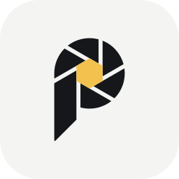

Pix logo — usage guide
The P's bowl is a camera shutter, and one of its blades runs on to become the stem. Black blades, a yellow aperture, plenty of room.
1 · Versions


Wordmark: "Pix" in Poppins ExtraBold (SIL Open Font License, free for logos), outlined in the files. The i's dot is a Sun hexagon, optically as wide as the i's stem. Text set next to the logo can use Poppins or the app's own UI font.
2 · Clear space and minimum size
Keep a clear zone of x on every side, where x is the width of the yellow hexagon. It scales with the logo. For the lockups, measure x on the symbol and keep it around the whole lockup.
| Version | Screen | Print (suggested) |
|---|---|---|
| Symbol | 32 px tall or larger | 8 mm tall |
| Small cut | 16–31 px | 4–8 mm |
| Horizontal | 120 px wide or larger | 30 mm wide |
| Stacked | 64 px wide or larger | 16 mm wide |
3 · Colour
Ink — blades and wordmark
#16171A · RGB 22 23 26 · CMYK 15 12 0 90
Sun — the aperture and the i's dot
#F2C14E · RGB 242 193 78 · CMYK 0 20 68 5
Paper — the app-icon tile and light backgrounds
#F4F4F2 · RGB 244 244 242 · CMYK 0 0 1 4
CMYK values are straight conversions; proof them before print, and pick Pantone matches from a swatch book.
-on-dark on Ink: Paper blades, Sun aperture-black for one-colour print; the aperture stays open-white on photos, on a calm area4 · Don't
Also: don't fill the aperture in the one-colour versions, don't change the size or position of the parts of a lockup, and don't retype the wordmark: the files carry its outlines and the custom dot.
5 · Files
| Use | File |
|---|---|
| Default logo | pix-horizontal.svg, png/pix-horizontal.png |
| Dark backgrounds | *-on-dark.svg (colour) or *-white.svg (one colour) |
| One-colour print, engraving, stamps | *-black.svg, *-white.svg |
| App icon, Play Store (512 px) | pix-app-icon.svg, png/pix-app-icon-512.png; small sizes: pix-app-icon-small.svg |
| GitHub README (light and dark) | png/pix-horizontal.png, png/pix-horizontal-on-dark.png |